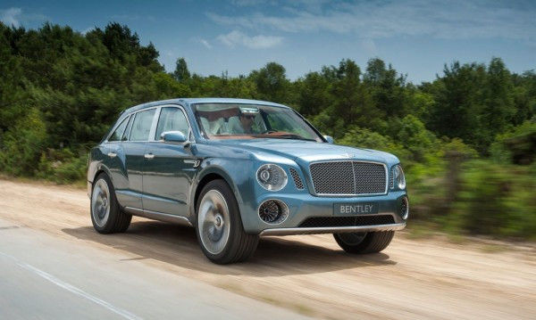

Bentley планира да навлезе в нови територии
От Bentley обявиха намеренията си да създадат автомобили в сегменти от които досега не са се интересували. Фирмата планира да разработи два „малки” автомобила – един компактен кросоувър и един тип „shooting brake" (компактен комби автомобил с три врати), съобщава списание Аutomobile.
Двата нови модела ще бъдат произвеждани на платформи от Audi, която като Bentley е в групата Volkswagen. Основната причина за интереса на Bentley към компактните автомобили е промяната на пазара, при която търсенето на скъпите големи лимузини (произвеждани от фирмата дълги години) намаля.... Прочети повече -->
Posted inАвто3Comments